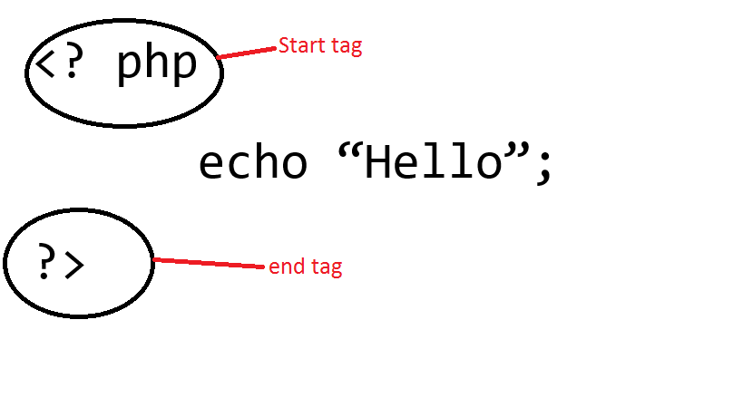
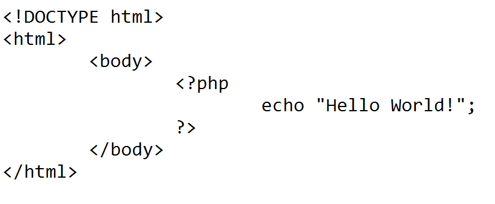
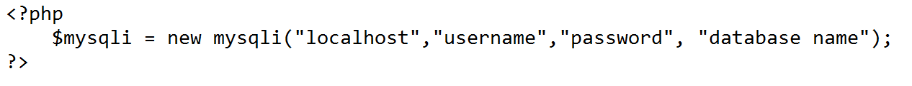

PHP
PHP(Hypertext Preprocessor) is an embedded scripting language in an HTML of a Web page. PHP is commonly used in server side scripting.
In order to create a PHP script, we must first open a text editor where we can encode our script such as Sublime Text, Notepad and etc. PHP script is enclosed with a start and an end tag.

After we create our PHP script, we must place it inside our HTML code on where we want to place it, or we can just directly code our php script inside the HTML code.

All PHP statements must end with a semi-colon (;).
In the server-side scripting, in order for our PHP script to run, we must run the wampserver, open its directory, and place the file inside the “www” folder. The file that contains the PHP script must have a .php file extension.
PHP also have its comments.

We can also connect to the database using PHP.

Wherein:
-
“localhost” = might be an IP address or localhost itself.
-
“username” = username to access database
-
“password” = password of the database
-
“database name” = name of the database(schema) we are connecting to
Superglobals are PHP’s predefined variables. It means that they will always be accessible in spite of scope. We can also access the Superglobals from any function, file, class, or without doing anything special.
Superglobals variables of PHP:
-
$_GLOBALS – it is used to access global variables anywhere in a PHP script
-
$_SESSION - this variable retrieves from the session that we open at each page’s beginning.
-
$_REQUEST – it is used in collecting data after submitting HTML form.
-
$_FILES – this variable is populated with uploaded file’s useful information.
-
$_SERVER – this PHP superglobal variable holds the information about script locations, headers and paths
-
$_POST – widely used superglobal variable that is used in collecting data after submitting HTML form and is also used widely to pass variables.
-
$_GET – same function with the $_POST variable and can also collect data that was sent in the URL.
-
$_ENV – this superglobal variable gets the environment variable’s value.
-
$_COOKIE – this superglobal variable handles a cookie in PHP. Cookie is used to identify a user.
What is PHP (Hypertext Preprocessor) ? - Definition from WhatIs.com. (n.d.). Retrieved May 19, 2017, from http://searchenterpriselinux.techtarget.com/definition/PHP
(n.d.). Retrieved May 19, 2017, from http://www.nusphere.com/php/php_history.htm
(n.d.). Retrieved May 19, 2017, from https://www.w3schools.com/php/php_syntax.asp
(n.d.). Retrieved May 19, 2017, from https://www.w3schools.com/php/php_forms.asp
(n.d.). Retrieved May 19, 2017, from https://www.w3schools.com/php/php_sessions.asp
PHP File Upload, using the FILES superglobal array. (n.d.). Retrieved May 19, 2017, from http://stackoverflow.com/questions/2785629/php-file-upload-using-the-files-superglobal-array
Getenv. (n.d.). Retrieved May 19, 2017, from http://php.net/manual/en/function.getenv.php
(n.d.). Retrieved May 19, 2017, from https://www.w3schools.com/php/php_cookies.asp